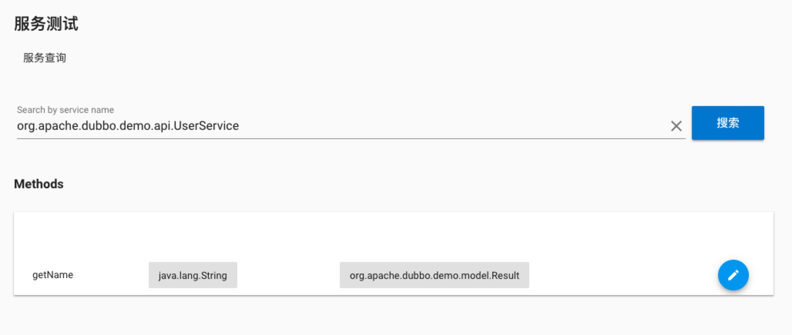
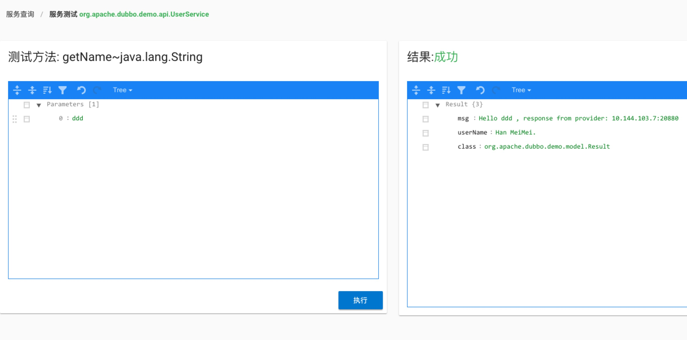
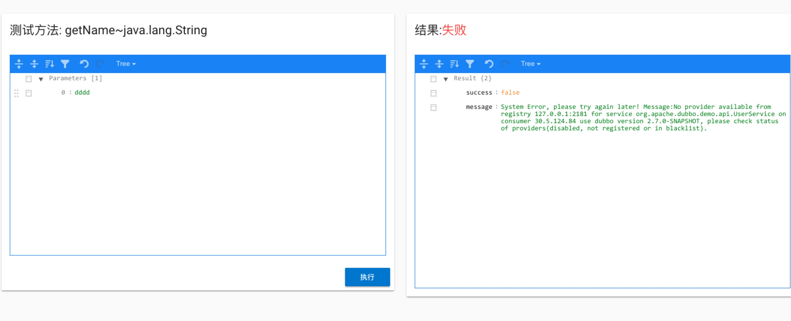
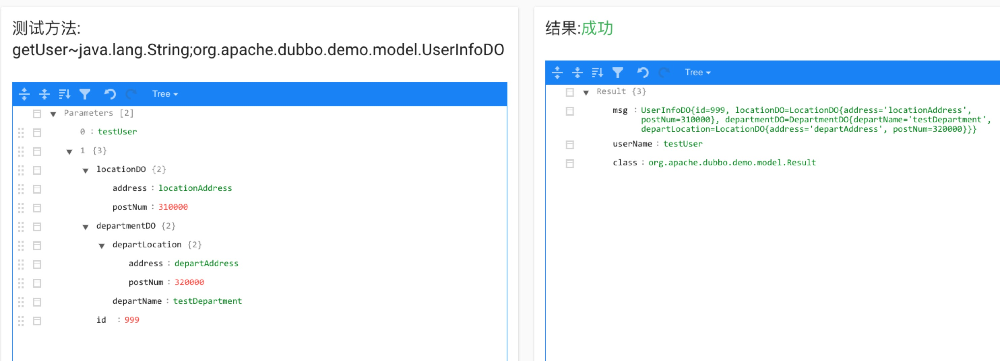
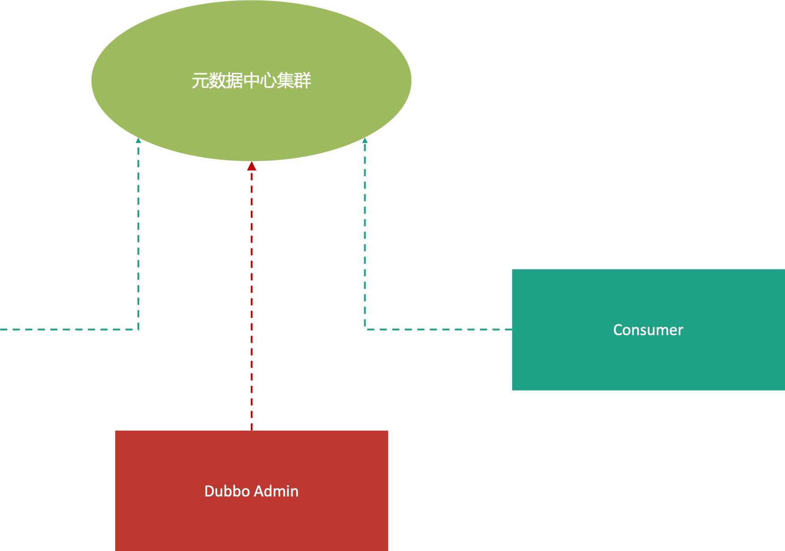

Dubbo Admin服务测试功能
基于Dubbo2.7的元数据，Dubbo Admin实现了服务测试功能，可以通过泛化调用，在控制台上调用真实的服务提供者
使用方式
- 部署服务提供者： 可以在这里下载demo，此工程基于spring boot，方便在IDE或者命令行启动，对于服务测试来说，只需要启动
dubbo-basic-provider即可。 - 服务查询： 完成服务端部署后，可以到Dubbo Admin的
服务测试页面上查询对应的服务: 
这里的信息和元数据类似，包含方法名，参数类型和返回值信息，点击右边的标签就可以进入服务测试页面 - 服务测试：

服务测试页面包含了两个json编辑器，参数类型的信息都是以json格式保存，这里需要填入对应的参数值(本例中数类型时String)，填写完成后点击执行即可对服务端发起调用，调用结果展示在右边的编辑器中，如果调用失败，会显示详细的失败原因，下面来看一下调用失败的例子：
 本例中，先关掉Dubbo服务提供者的进程，再执行服务测试，可以看到返回的结果是找不到服务提供者的异常。和普通调用一样，业务和框架的异常都会返回在结果中，方便业务排查。 - 复合类型参数
考虑UserService中的以下方法和类型：
//org.apache.dubbo.demo.api.UserService
Result getUser(String name, UserInfoDO userInfoDO);
public class UserInfoDO {
private int id;
private LocationDO locationDO;
private DepartmentDO departmentDO;
@Override
public String toString() {
return "UserInfoDO{" +
"id=" + id +
", locationDO=" + locationDO.toString() +
", departmentDO=" + departmentDO.toString() +
'}';
}
}
public class DepartmentDO {
private String departName;
private LocationDO departLocation;
@Override
public String toString() {
return "DepartmentDO{" +
"departName='" + departName + '\'' +
", departLocation=" + departLocation.toString() +
'}';
}
}
public class LocationDO {
private String address;
private int postNum;
@Override
public String toString() {
return "LocationDO{" +
"address='" + address + '\'' +
", postNum=" + postNum +
'}';
}
}
参数是比较复杂的符合类型参数，服务测试的时候，会逐层展开填写每一个field的值，如下图所示：

同样可以调用成功并且返回结果
原理：数据来源
服务测试中，最重要的就是完整的方法签名信息，和参数的类型信息，有了这些信息才能够一步步填入每个参数的值，拼装出完整的服务消费者。在Dubbo2.7中，新增了元数据中心，Dubbo Admin的方法签名和参数类型信息就是从这里来的：

如图所示，服务端在运行的时候会将服务的元数据信息注册到元数据中心，格式如下：
{
...
"methods": [
{
"name": "sayHello",
"parameterTypes": [
"org.apache.dubbo.demo.model.User"
],
"returnType": "org.apache.dubbo.demo.model.Result"
},
...
],
"types": [
{
"type": "char"
},
{
"type": "long"
},
{
"type": "org.apache.dubbo.demo.model.Result",
"properties": {
"msg": {
"type": "java.lang.String",
"properties": {
"value": {
"type": "char[]"
},
"hash": {
"type": "int"
}
}
},
"userName": {
"type": "java.lang.String",
"properties": {
"value": {
"type": "char[]"
},
"hash": {
"type": "int"
}
}
}
}
},
{
"type": "org.apache.dubbo.demo.model.User",
"properties": {
"id": {
"type": "java.lang.Long",
"properties": {
"value": {
"type": "long"
}
}
},
"username": {
"type": "java.lang.Sring",
"properties": {
"value": {
"type": "char[]"
},
"hash": {
"type": "int"
}
}
}
}
},
...
]
}
与服务测试相关的就是methods和types所包含的方法和类型信息，Dubbo Admin根据这些信息，将参数渲染到服务测试页面的Json Editor中，由用户来输入每个参数，每个成员变量的值。
原理： 泛化调用
有了参数类型，下一个问题就是怎么能够调用到服务端，在传统的Dubbo RPC调用中，客户端需要依赖服务端的API jar包(参考前文demo中的dubbo-basic-consumer)，这对于Dubbo Admin来说不太可能，因为服务的上下线是动态的，Dubbo Admin无法动态增加jar包依赖，因此需要用到Dubbo中的泛化调用，指的是在没有服务端API接口的情况下，客户端直接通过 GenericService 接口来发起服务调用，返回值中的数据对象都用Map来表示。泛化调用在服务端不需要做特殊处理，只需要客户端发起即可。
总结和展望
本文简单介绍了服务测试的用法和原理，后续会进一步针对该功能进行增强，比如处理抽象类的参数类型，支持从json文件导入参数值，支持对参数值的保存等等，方便对服务接口进行回归测试。